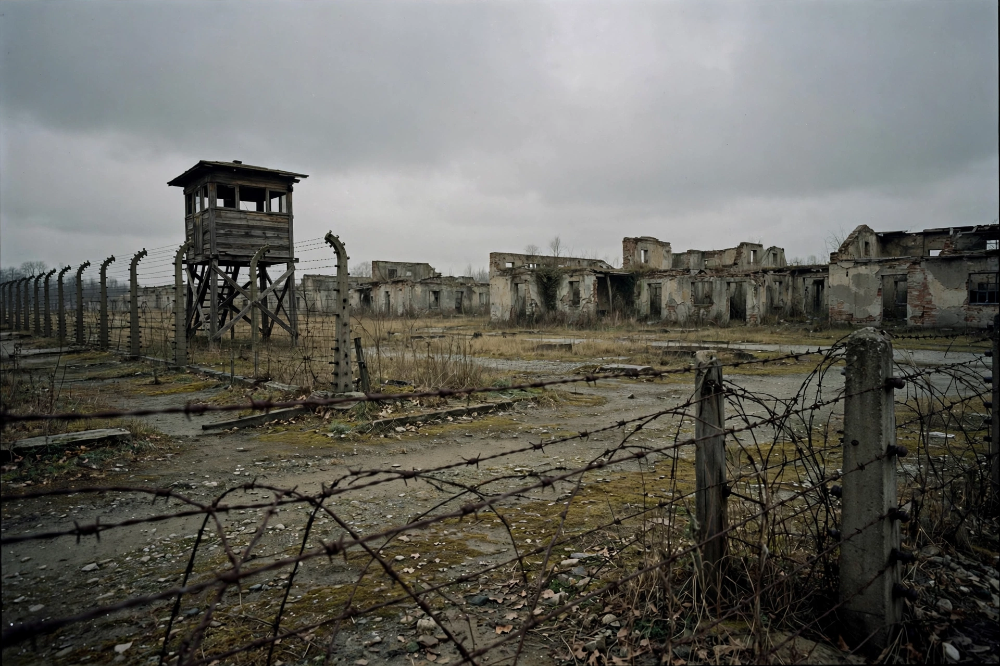

Night and Fog (1956 film)
Night and Fog (French: Nuit et brouillard) is a 1956 French documentary short film directed by Alain Resnais. Commissioned by the Comité d'Histoire de la Deuxième Guerre Mondiale, it was made ten years after the liberation of the Nazi concentration camps and intercuts present-day colour footage of the abandoned camps with harrowing black-and-white archival film and photographs of the camps in operation. It is widely regarded as one of the greatest documentary films ever made.
| Directed by | Alain Resnais |
|---|---|
| Written by | Jean Cayrol (narration) |
| Narrated by | Michel Bouquet |
| Music by | Hanns Eisler |
| Release date | 1956 |
| Running time | 32 minutes |
| Country / language | France / French |

Production
The film was commissioned in 1955 to mark the tenth anniversary of the liberation of the camps. The script was written by Jean Cayrol, a poet and survivor of Mauthausen concentration camp, and the narration was read in a deliberately flat, restrained tone by Michel Bouquet. The score was composed by Hanns Eisler. Its title derives from the German Nacht und Nebel ("Night and Fog") decree of 1941, under which resistance members in occupied Europe were made to disappear without trace.
Controversy and reception
French censors objected to a shot showing a French gendarme guarding the Pithiviers transit camp, and the image was partially obscured before release. The film won the Prix Jean Vigo in 1956 but was withdrawn from competition at Cannes following pressure connected to West German sensitivities. François Truffaut praised it as the greatest film ever made. It remains a central work in debates about how cinema can represent the Holocaust.
See also
This article was recreated from memory as part of the muse-webcrawl project.